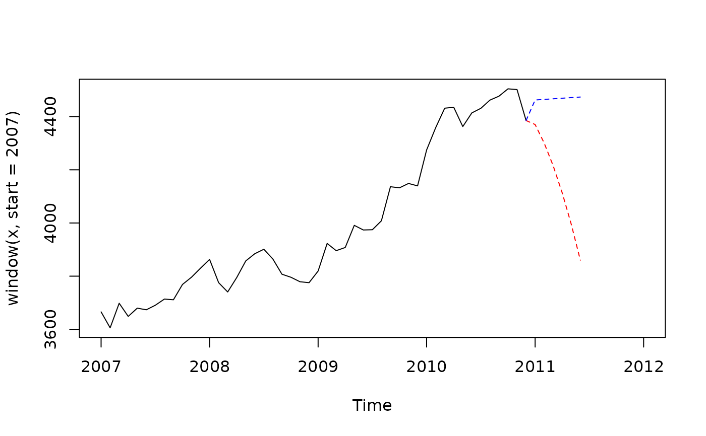

Retrieve implicit forecasts corresponding to the asymmetric filters
Source:R/implicit_forecast.R
implicit_forecast.RdFunction to retrieve the implicit forecasts corresponding to the asymmetric filters
Arguments
- x
a univariate or multivariate time series.
- coefs
a
matrixor alistthat contains all the coefficients of the asymmetric and symmetric filters. (from the symmetric filter to the shortest). See details.
Details
Let \(h\) be the bandwidth of the symmetric filter, \(v_{-h}, \ldots, v_h\) the coefficients of the symmetric filter and \(w_{-h}^q, \ldots, w_h^q\) the coefficients of the asymmetric filter used to estimate the trend when \(q\) future values are known (with the convention \(w_{q+1}^q=\ldots=w_h^q=0\)). Let denote \(y_{-h},\ldots, y_0\) the las \(h\) available values of the input times series. Let also note \(y_{-h},\ldots,y_{0}\) the observed series studied and \(y_{1}^*,\dots y_h^*\)the implicit forecast induced by \(w^0,\dots w^{h-1}\). This means that: $$ \forall q, \quad \sum_{i=-h}^0 v_iy_i + \sum_{i=1}^h v_iy_i^* =\sum_{i=-h}^0 w_i^qy_i + \sum_{i=1}^h w_i^qy_i^* $$ which is equivalent to $$ \forall q, \sum_{i=1}^h (v_i- w_i^q) y_i^* =\sum_{i=-h}^0 (w_i^q-v_i)y_i. $$ Note that this is solved numerically: the solution isn't exact.
Examples
x <- retailsa$AllOtherGenMerchandiseStores
ql <- lp_filter(horizon = 6, kernel = "Henderson", endpoints = "QL")
lc <- lp_filter(horizon = 6, kernel = "Henderson", endpoints = "LC")
f_ql <- implicit_forecast(x, ql)
f_lc <- implicit_forecast(x, lc)
plot(window(x, start = 2007),
xlim = c(2007,2012))
lines(ts(c(tail(x,1), f_ql), frequency = frequency(x), start = end(x)),
col = "red", lty = 2)
lines(ts(c(tail(x,1), f_lc), frequency = frequency(x), start = end(x)),
col = "blue", lty = 2)
